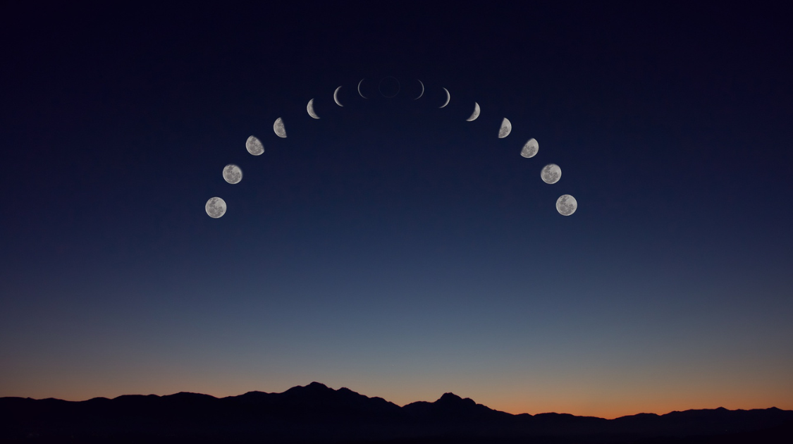

World
The Moon is Drifting Away From Earth
By Owen Hu | Published Oct 6, 2021 4:48 p.m. PST

Scientists hypothesize that, over 4.5 billion years ago, another planet crashed into the Earth, sending a massive chunk of the planet out into space—this new formation would soon become the moon. Today, the moon is responsible for the Earth’s seasons, day-night cycle, ocean tides, and much of the climate. So then, what would happen if the moon were to slowly drift away from the Earth and leave our planet by itself?
According to recent estimates, the moon orbits as many as 10 times farther today than when it first formed many millennia ago. This is because increasing gravity from the Earth slowly sped up the moon’s orbit, thus incrementally drifting the moon into a farther trajectory around the Earth. Current estimates place the drift-away distance at one and a half inches per year. Even though on the scale of the universe, this is a nearly unnoticeable change, and even though this is significantly slower than the rate of the moon moving away at eight inches per year in the early years of the moon’s existence, it is still evident and irreversible. There is currently nothing humanity can do to prevent the slow drift of the moon, and in the millions of years to come, the gap will only continue to widen.
The method scientists use to measure the drift is simpler than it would appear. Laser beams are blasted at mirrors that were left on the moon by the Apollo missions decades ago, and the distance and speed of these blasts are measured and compared to data from previous years to calculate the change in distance. Using other sources, scientists have approximated that a day was only four hours on Earth 4.5 billion years ago, but the slowing of the Earth’s spinning and the drifting of the moon have brought the time to 24 hours today. Due to the moon’s slow drift speed, though, it would take a century for even two milliseconds to be added to the length of an Earth day.
What does this mean for us on Earth? Despite the thought of the moon drifting infinitely away from the Earth in the future being incredibly scary, there is nothing to worry about, at least not in our lifetimes. The current drifting of the moon is so negligible that it hardly resembles what science fiction books and movies would condition us to believe. It would take many eons of time for any noticeable change on Earth from the moon’s drift, and even then it would only marginally affect the seasons or the length of a day by fractions of a second. By that point, though, the drift of the moon is a problem that pales in comparison to the engulfing of the inner solar system as the sun enters the next phase of its life. Ultimately, our drifting moon is a fascinating insight into the inevitability of cosmic events and the mysteries the universe still holds.